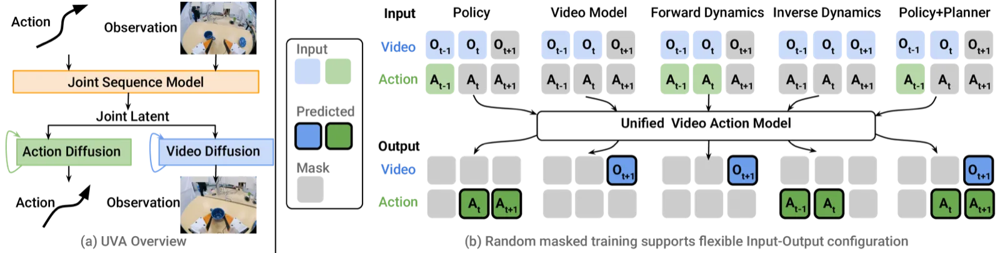
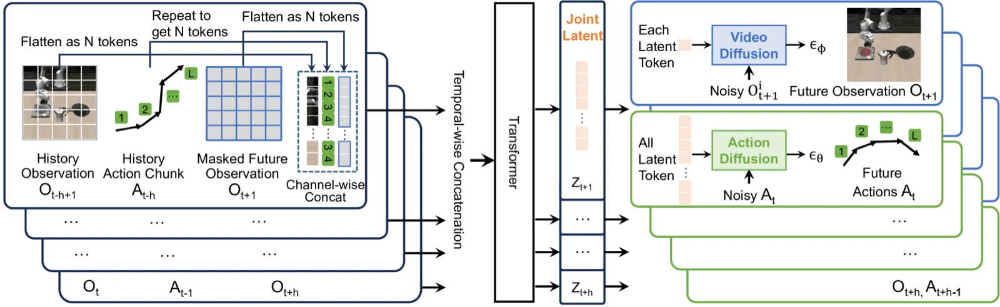
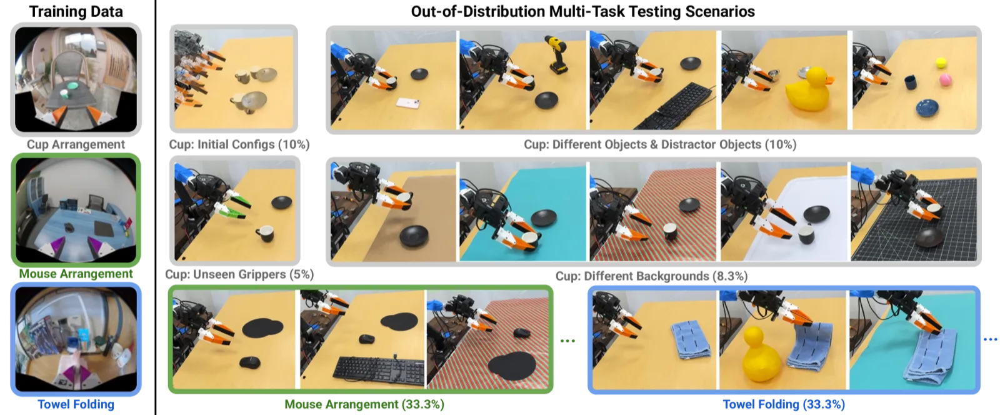
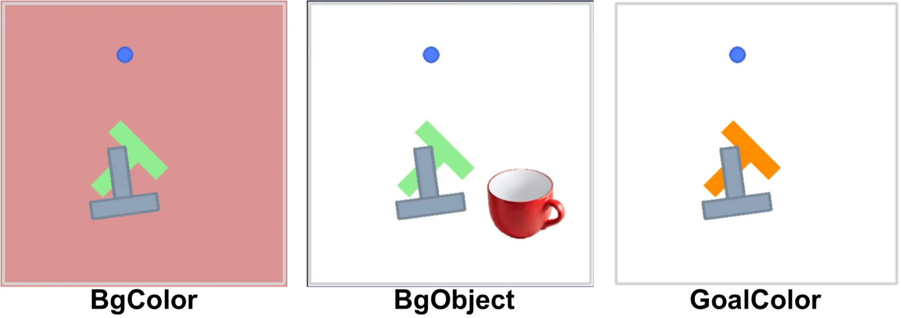
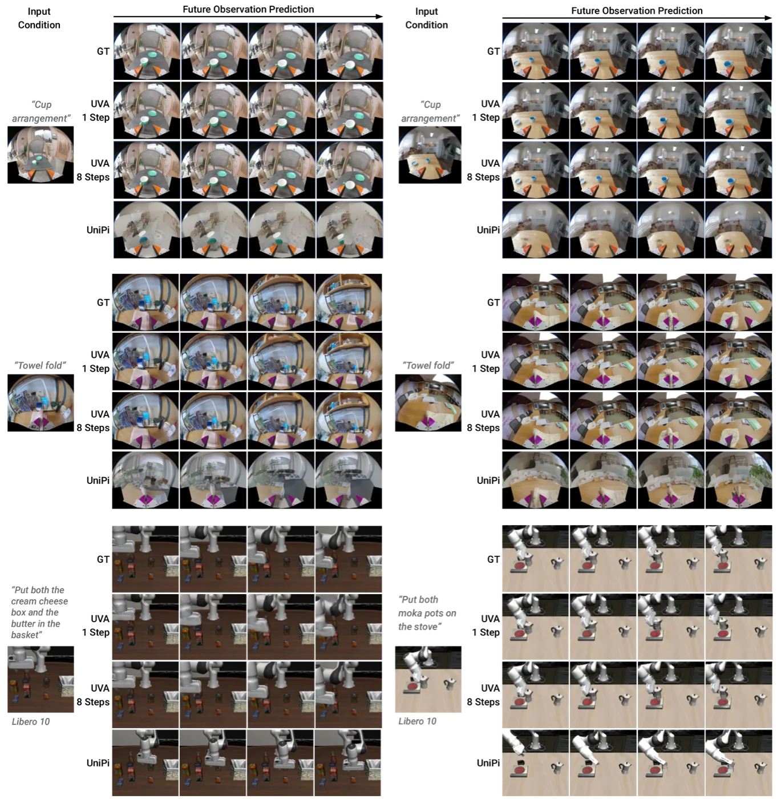

UVA 构建了一个统一的视频-动作潜在表征，并通过解耦的轻量级扩散解码头同时支持视频重建与动作预测。借助 masked training，单一模型可灵活切换策略学习、视频生成、正向/逆向动力学建模等多种任务，无需视频生成即可以极低延迟完成推理部署。
机器人学习领域长期面临一个根本矛盾：动作预测需要高时间频率的密集、精细推理，而视频生成需要高空间分辨率和大量计算资源。现有方法要么完全跳过视频生成（action-only policies），丢失了视觉场景动态的监督信号；要么先生成视频再预测动作（如 UniPi），导致推理速度慢且错误传播严重。
"We propose a joint video-action latent representation and decouple video-action decoding to achieve both accuracy and computational efficiency."

UVA 由四个核心模块组成：历史编码器（Encode History）、masked autoencoder 观测预测器、解耦的视频与动作扩散解码头，以及支持多任务的 masked training 机制。训练时两种解码 loss 联合优化共享 latent；推理时只需运行轻量动作头，彻底消除视频生成的推理开销。

历史观测帧 {Ot−h+1, …, Ot} 通过预训练 VAE 编码器（kl-f16）编码为形如 ℝw×h×c 的 latent map，展平并经全连接层投影为 d 维向量，每帧表示为 N 个视觉 token。对于动作（采样频率高于观测），将动作块重复 M 次与视觉 token 对齐，经 FC 层投影为 N 个动作 token，作为 Transformer 的条件输入。
未来观测帧经与历史相同的方式编码，训练时对视觉 token 进行随机 masking，模型学习重建被遮盖的 token。Transformer 融合视频与动作信息，输出联合视频-动作潜在表征 Z。关键设计：跨所有视频帧在相同位置进行 masking，防止信息泄露。推理时模型从空序列出发自回归生成完整视频。对于语言条件任务，CLIP 编码的语言 token 追加到输入序列。
与先生成视频再预测动作的层级式方案不同，UVA 使用两个独立的轻量级扩散解码器，均以共享 latent Z 为条件。训练时两路 loss 同步监督：
部署时只运行动作扩散头，无需执行视频生成，推理延迟与纯动作策略相当。
通过在输入端对未使用的模态进行 masking 并替换为可学习的 mask token，单一模型支持五种训练任务的灵活切换：
历史观测 + 历史动作 → 预测未来动作。核心机器人控制任务。
历史观测 + 历史动作 → 预测未来视频帧。视觉场景规划与想象。
历史观测 + 历史动作 + 未来动作 → 预测未来视频。用于动作采样评分。
历史观测 + 未来观测 → 预测连接动作。无需显式动作标注的场景。
实验覆盖仿真与真实场景的单任务/多任务设置，评估 UVA 在策略学习、视频生成、正向/逆向动力学建模等方面的能力，并与 Diffusion Policy (DP-C, DP-UMI)、UniPi、π₀、OpenVLA 等基线进行对比。
| 场景 | 任务 | 最优基线 | UVA | 备注 |
|---|---|---|---|---|
| 仿真单任务 | PushT | 0.91 (DP-C) | 0.98 | +7.7% |
| 仿真单任务 | Toolhang | 0.95 (DP-C) | 0.88 | 略低于最优 |
| 仿真多任务 | PushT-M | 0.68 (DP-C) | 0.88 | +20% |
| 仿真多任务 | Libero10 | 0.85 (π₀) | 0.90 | +5.9%，参数量仅 1/6 |
| 真实单任务 | UMI Cup | 0.95 (DP-UMI) | 0.85 | DP-UMI 含恢复数据优势 |
| 真实多任务 (OOD) | Cup | 0.50 (DP-UMI) | 0.65 | 分布外泛化 |
| 真实多任务 (OOD) | Mouse | 0.40 (DP-UMI) | 0.80 | 未见物体/夹爪 |


在 PushT-M 的历史长度消融实验（history length 从 1 增加到 5）中，DP-C 随历史增加性能明显下降，而 UVA "maintained robust performance as history length increased"，展现出更稳定的时序建模能力。
| 场景 | UniPi FVD ↓ | UVA FVD (1-step) ↓ | UVA FVD (8-step) ↓ |
|---|---|---|---|
| Libero10（仿真） | 56.55 | — | 51.10 |
| Cup Arrangement（真实） | 71.37 | 51.34 | 29.72 |

在积木推拨任务（Block Pushing）中，UVA 的正向动力学模型为 DP-C 的 100 条采样动作轨迹打分选优。成功率从 DP-C 独立运行的 38% 提升至 60%（ground-truth 仿真器上限为 75%），四种颜色配置下平均提升 +22 个百分点。
| 方法 | 位置误差 (cm) ↓ | 旋转误差 (°) ↓ |
|---|---|---|
| UniPi 逆向动力学 | 1.92 | 2.21 |
| Visual-Inertial SLAM | 0.41 | 0.30 |
| UVA（本文） | 0.75 | 1.11 |
作者认为 UVA 的逆向动力学性能代表了 "a viable alternative to SLAM, which is difficult to calibrate and suffers from a high failure rate."
移除视频生成分支（UVA-action only）后，策略成功率在多任务设置下明显下降，验证了联合视频-动作监督对策略鲁棒性的贡献。对 masking 策略的消融（application-dependent vs. application-independent，不同 mask ratio）也在附录 Table VIII 中详细报告。在 Libero10 上加入少量人类示教视频（action-free），成功率从 0.90 进一步提升至 0.91（500-test 设置），证明框架具备利用无动作视频数据的潜力。
仿真任务单条轨迹推理耗时 0.23s（对比 DP-C Transformer 变体 0.36s）；真实世界实验推理延迟 95ms。"The use of decoupled diffusion heads eliminates the need for video generation during policy inference."
论文明确指出，当前框架 "does not currently leverage large amounts of actionless video data, which could provide valuable additional supervision." 作者建议通过在大规模网络视频数据集上进行预训练，可以显著增强模型的泛化能力。附录实验表明加入少量人类视频数据可小幅提升性能，但系统性探索留待未来工作。
在真实环境 UMI Cup 单任务测试中，UVA 成功率 0.85 低于 DP-UMI 的 0.95。作者将此归因于 DP-UMI 使用了专为短历史窗口优化的恢复数据，而 UVA 使用多任务通用设置。此局限在多任务 OOD 场景中不再出现。
当前 UVA 仅支持视觉观测与末端执行器动作两种模态。论文提到未来计划通过增加新的扩散头来扩展预测模态，"such as sound and force"，但当前版本尚不支持触觉、声音等多感官输入，限制了其在精密接触操作场景的应用。
尽管解耦设计避免了推理时的视频生成开销，但训练时视频解码器与动作解码器共享 latent Z，两者优化目标存在潜在竞争。在部分高精度操作任务（如 Toolhang）上，UVA 成功率（0.88）略低于专项动作策略 DP-C（0.95），表明联合优化可能在极高精度场景下存在一定代价。